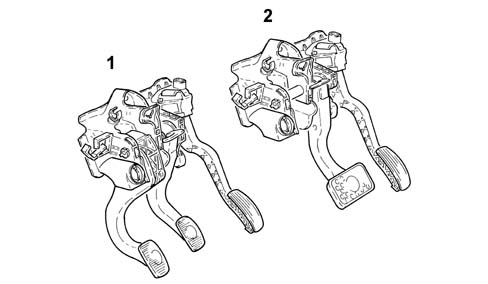

3330B pedal unit
- Path
- Descriptions > 33 BRAKING SYSTEM > 3330 HYDRAULIC BRAKING SYSTEM > 3330B pedal unit
- Kind
- system description
- Applies to
- all engines; all production periods
- Interactive page
- https://sloeber94.github.io/elrnDB-lYpsln/en/#/2427420
Applies to: all engines; all production periods
All cars are fitted with a pedal unit separate from the power unit. This consists of a mount with clutch and accelerator pedals in plastic and the brake pedal in steel. This solution makes it possible to fit an oversized 9' brake servo and achieve a significant weight reduction.
The unit's pedal/brake ratio ensures reduced pedal travel and allows brake servo size to be exploited to the full. Braking is also smoother and more gradual.
Pedal arrangement has been optimised to make the pedals more user-friendly by considering ideal ankle angle and pedal spacing parameters. On the Selespeed version, the pedal unit does not include a clutch release pedal because this function is taken over by the hydraulic control unit governed by the Selespeed ECU .
The accelerator pedal, on versions with appropriate engine management, is fitted with two built-in potentiometers (a main one and a safety back-up). These send pedal movements to the control unit, which opens the throttle by the required amount.

1 - Pedal for versions without Selespeed 2 - Pedal for vesions with Selespeed